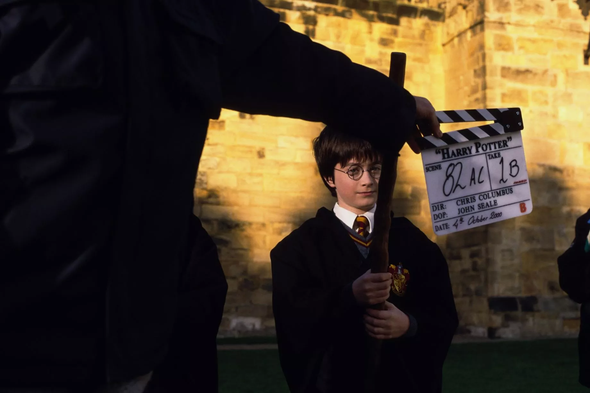

The Legacy and Impact
The film’s success was not just commercial but also cultural. It kickstarted the global phenomenon that became the Harry Potter franchise, which includes additional films, theme parks, stage productions, and a vast fan community. The movie introduced a generation of viewers to the magic of Hogwarts, and its influence continues to be felt across media today. Harry Potter and the Sorcerer’s Stone helped set the stage for the cultural movement that brought fantasy to the forefront of mainstream entertainment.
The Cast:
- Daniel Radcliffe as Harry Potter: A young actor who would grow up alongside his character, Radcliffe’s portrayal of Harry became iconic, making him one of the most recognized faces in the world.
- Rupert Grint as Ron Weasley: The lovable and funny sidekick to Harry, Ron's humor and loyalty made him a fan favorite.
- Emma Watson as Hermione Granger: As the intelligent and resourceful Hermione, Watson brought strength and heart to the role, solidifying her place as a central figure in the series.
- Richard Harris as Albus Dumbledore: The wise and kind headmaster of Hogwarts, Harris’s performance was revered until his passing.
- Maggie Smith as Professor McGonagall, Alan Rickman as Severus Snape, and Robbie Coltrane as Hagrid also helped create the film’s rich tapestry of memorable characters.
Behind the Scenes:
The film’s production was a magical feat in itself, with stunning sets and special effects. The filmmakers stayed true to J.K. Rowling’s vision, bringing the wizarding world to life with incredible detail. Iconic locations like Hogwarts Castle, Diagon Alley, and the Forbidden Forest were expertly created to immerse the audience in this fantastic universe.
Conclusion:
Harry Potter and the Sorcerer’s Stone is more than just the beginning of a film series; it is a cultural touchstone that introduced the world to a magical universe that continues to captivate audiences of all ages. The film’s enduring popularity speaks to the universal themes of friendship, courage, and the power of destiny.